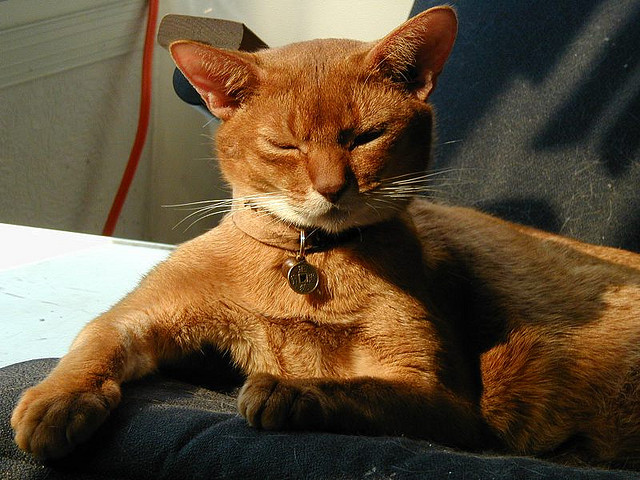

-элегантная короткошерстная кошка с грациозным и гибким телом. Характерный постав головы подчеркивают изящная шея и довольно большие прямостоячие уши, иногда опушенные кисточками. Шерсть, мягкая и шелковистая, плотно прилегает к телу. Глаза у представителей породы большие, чаще всего ярко-желтого цвета.
Характер:
Абиссинская кошка одна из самых красивых, активных и энергичных пород. Ей постоянно нужно двигаться! Абиссинцы любопытны и очень разговорчивы. Если кошке захочется внимания, она может следовать за человеком по пятам и призывать его громким мяуканьем. Абиссинцы не против прогулок на улице. Но будьте готовы, что кошка залезет на дерево, попытается сбежать или освободиться из поводка, поэтому важно заранее позаботиться о безопасности питомца.